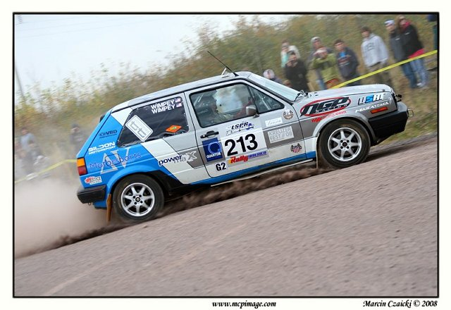
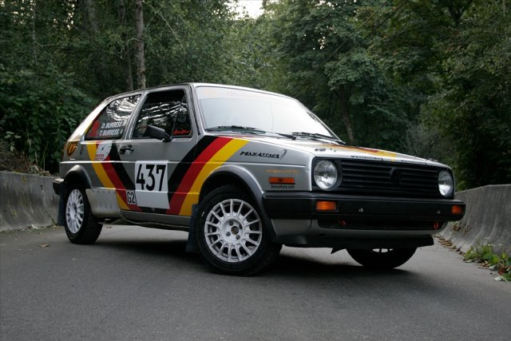

Rally is the pinnacle of motorsports and the upcoming Idaho Rally promises the ultimate in competition. Rally takes a tremendous amount of determination, commitment, and talent, not to mention an aversion to motion sickness. Hugely popular overseas and quickly gaining popularity in the U.S., rally showcases the most talented drivers in motorsports piloting street-legal machines in the most remote places in the country. Awe-inspiring scenery accompanies spectacular sideways action as drivers and co-drivers pilot their fire-breathing machines to victory and keep their service crews busy.
The Idaho Rally is held July 10-11 in Mountain Home, located in the foothills south east of Boise. It is the first round in the 2009 MaxAttack! Two-Wheel Drive Rally Championship. MaxAttack! was founded in 2006 and has quickly become known as the series where talent means more than money, where determination can overcome inadequate equipment, and where camaraderie extends from one team to their rivals. Spectators are consistently thrilled by MaxAttack! teams throughout the running order as drivers push to their limits to earn cash prizes for their efforts.
The ultimate battle at Rally Idaho, and arguably in all of North American rally, is the battle between the Wimpey brothers of Quantum Rally Sport and the Burress brothers of Demon Rally.
These two teams fighting for the MaxAttack! Championship will be especially exciting to watch. Both are teams of brothers hailing from opposite coasts determined to prove their mettle. Piloting nearly identical Group 2 (non-turbo 2WD) VW mk2 GTI's, each team is respected in their home region as the team to beat. Idaho is the first head to head contest for these potent rivals who regularly finish on the podium with high horsepower AWD cars despite using half the horsepower. Both teams prefer a good fight to an easy win and push to the limit on every corner in every stage to prove they are the fastest. Their driving style and approachability make them wildly popular with spectators who venture into the forest to catch a glimpse of the action.
It should be no surprise to anyone who has ever driven an mk2 GTI in anger that two of the top teams entered in the first round of the MaxAttack! Championship are driving one. The mk2 GTI has been a staple of the rally scene since its debut overseas. Piloted by World Champions and newcomers alike, the mk2 GTI is a great choice for a rally car. Both the Quantum Rally Sport and Demon Rally cars boast 2.0L 16V engines with upgraded suspension and transmissions. Each has been specially prepared for rally with full safety equipment including a roll cage, underbody protection, and extra car-strengthening measures. With such equally matched cars and talented teams, this will be a sight to see.

Josh and Jeremy Wimpey of Virginia are bringing their A-game all the way to the Pacific Northwest. With titles including the “2007 Eastern States Rally Champions” and “United States Rally Championship Rookie of the Year,” Quantum Rally Sport has remained undefeated in Group2 since 2005. Two early season retirements while leading have left the team eager to follow up on their previous 2nd and 4th place MaxAttack! finishes from years past with a podium placing.

Tom and Don Burress, from Seattle, Washington, are aiming to test their mettle against the best drivers in the nation at Rally Idaho. The Demon Rally team will also debut their new car and explore its limits. They have already finished 4th in a MaxAttack! event (LSPR 2007) and are looking to set the standard for MaxAttack! events this year. Their speed in a Group 2 car is unmatched by current competitors in the Northwest, as evidenced by their record-setting run on the Brooklyn stage at the Doo Wop Rally. They have finished on the podium at regional rallies and set top 10 stage times at the national level. Now, they aim to fight off the competition at the first round of the MaxAttack! Championship.
The stage is set for an amazing battle in Idaho. Come spectate in person or watch from afar, you will not be disappointed. Visit www.Max-Attack.com and www.IdahoRally.com for more details.
Quantum Rally Sport: http://quantumrallysport.googlepages.com
Partnering with Delta-V Motorsports (www.deltavmotorsports.com), NGP Racing (www.ngpracing.com), Matt Clark of Victory By Design Graphics (www.vbdgraphics.com), USRT (www.usrallyteam.com), Diebold Autosport (www.dieboldautosport.com)
Demon Rally: http://www.demonrally.com/
Presented by Fine Tuning (www.finetuningperformance.com), RalleyTuned (www.ralleytuned.com), Meister Autowerks (www.meistergaugefaces.com), Spitfire EFI (www.spitfireEFI.com), Product Apparel (www.productapparel.com), JVAB Imports | Techtonics Tuning | 034 Motorsport | Les Schwab